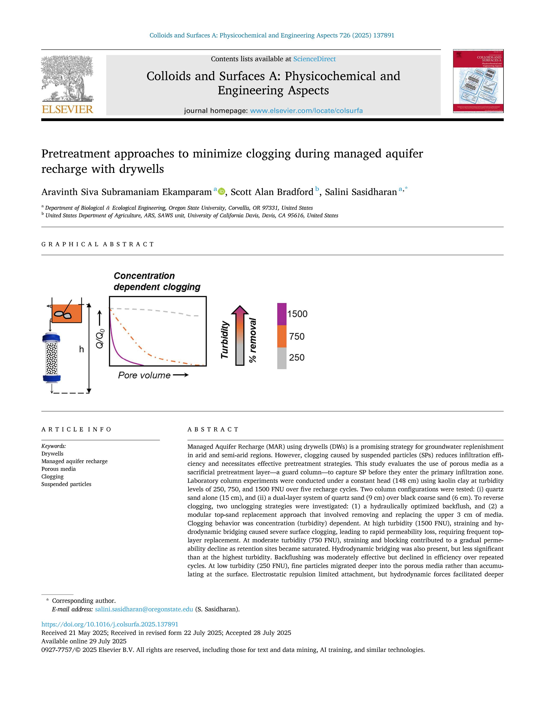
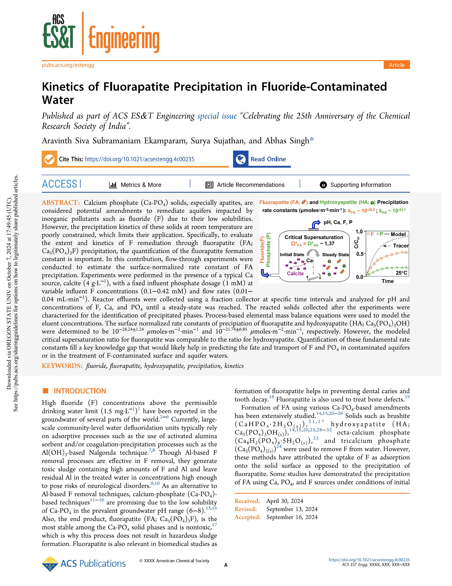
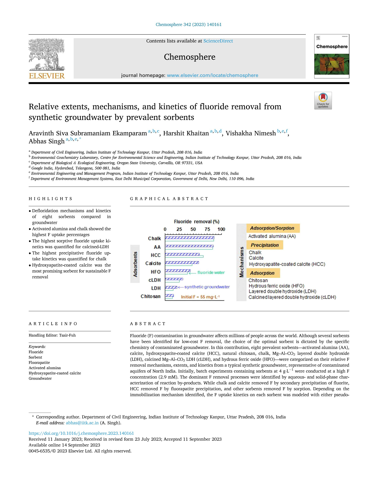

Environmental geochemist with 10+ years of dedicated expertise specializing in mineral-water interfacial processes, geochemical characterisation of soils & sediments, contaminant speciation/mobility, and engineered pretreatment for managed aquifer recharge (MAR) systems.
Dr. Aravinth Siva Subramaniam Ekamparam received his Ph.D. in Environmental Engineering from the Indian Institute of Technology Kanpur (IIT Kanpur) under Dr. Abhas Singh, followed by three years of postdoctoral research at Oregon State University (OSU) under Dr. Salini Sasidharan.
His research integrates mineral phase transformations (calcite to fluorapatite), column physical clogging dynamics in drywells, agrivoltaic rainwater harvesting, kinetic modeling of geogenic contaminants (Fluoride, Arsenic, Uranium, Chromium), and point-of-use industrial wastewater solutions.
Mineral-water interfacial processes, soil/sediment speciation, fluorapatite nucleation, and sorption thermodynamics.
Fate & transport of geogenic contaminants (F⁻, As, U, Cr, Nitrate), subsurface leaching, and surface water intrusion.
Pretreatment systems for drywell MAR, agrivoltaic rainwater harvesting, physical/biological clogging, and backflushing.
Point-of-use industrial wastewater treatment, polymer-coated quartz sand sorbents, and sludge recycling.

Aravinth Siva Subramaniam Ekamparam, Scott A. Bradford, Salini Sasidharan

Aravinth Siva Subramaniam Ekamparam, Surya Sujathan, Abhas Singh

A. S. S. Ekamparam, Harshit Khaitan, Vishakha Nimesh, Abhas Singh
Trans-disciplinary framework for eco-resilient groundwater sustainability, flood mitigation, and irrigation security.
Optimizing harvested water quality and soil health for sustainable agriculture and drywell MAR systems in Oregon.
Leading applied research on complex water matrices, geochemical characterisation, and commercial water treatment technologies.
Researched drywell MAR systems, column physical clogging dynamics, agrivoltaic rainwater collection, and nitrate aquifer biogeochemistry.
Dissertation on the processes governing fluoride removal from water by calcium-based amendments.